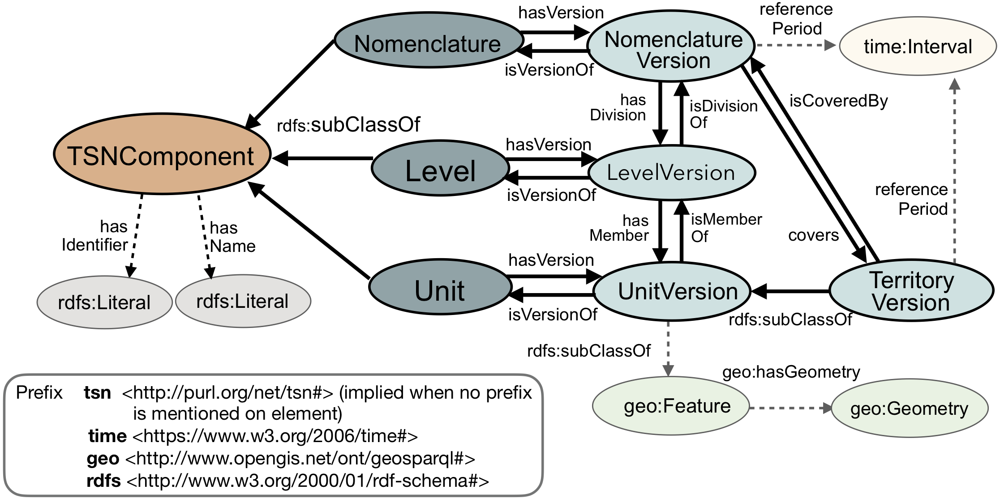

Prologue
Table of contents
Ontologies (1):
Territorial Statistical Nomenclature Ontology
Classes (11):
Level , LevelVersion , Nomenclature , NomenclatureVersion , Territory , TerritoryVersion , TSNComponent , TSNFeature , Unit , UnitVersion , Version
Properties (22):
belongsToLevel , belongsToNomenclatureVersion , covers , hasAcronym , hasDescription , hasGeometry , hasIdentifier , hasLevel , hasLowerLevel , hasName , hasSubUnit , hasSuperUnit , hasUnit , hasUpperLevel , hasVersion , isCoveredBy , isPredecessorOf , isSuccessorOf , isVersionOf , nomenclatureVersionSource , referencePeriod , versionRights
Individuals (4):
individual2054931776 , individual2054931777 , individual2054931778 , individual2054931779
Abstract
We present in this document the TSN Ontology ( Territorial Statistical Nomenclature Ontology ) to describe any Territorial Statistical Nomenclature i.e., partitions of space into territorial units (e.g. administrative, electoral, statistical units) used as a suppport to the collect of socio-economic statistics.
Diagrams of the ontology
TSN Components

TSN Feature

TSN Mains classes 
Funding
This work was supported by the French region Auvergne-Rhône-Alpes [grant number REGION 2015-DRH-0367]. ARC7 : Innovations, mobilités, territoires et dynamiques urbaines.

Territorial Statistical Nomenclature Ontology (Ontology)
This RDF ontology allows describing any Territorial Statistical Nomenclature (TSN) (i.e., partition of the territory) used as a support to socio-economic data (statistical data that describe territory in terms of population, unemployement rate, transport access, etc.).
Version Control information
- Version
- 1.0
- Last modified
- Issued
- Creators
- Publishers
- License
- http://creativecommons.org/licenses/by/3.0/
Definition
The URI of this ontology is http://purl.org/net/tsn#
| Preferred Namespace URI | |
| Preferred Prefix | |
Classes
Level , LevelVersion , Nomenclature , NomenclatureVersion , Territory , TerritoryVersion , TSNComponent , TSNFeature , Unit , UnitVersion , Version
Level (RDFS Class)
The Level concept describes a level of observation of the Territory defined within the Nomenclature. Several levels of observation may be defined (e.g., region or district levels)
Definition
The URI of this class is http://purl.org/net/tsn#Level
| This class is a sub class of | TSNComponent |
LevelVersion (RDFS Class)
The LevelVersion concept describes a unique representation of a Level, stable for a period of time. This period of time is inherited from the reference period of the NomenclatureVersion the LevelVersion belongs to.
Definition
The URI of this class is http://purl.org/net/tsn#LevelVersion
| This class is a sub class of | TSNFeature Version |
In use
| This class is used in | belongsToLevel belongsToNomenclatureVersion hasLevel hasLowerLevel hasUnit hasUpperLevel |
Nomenclature (RDFS Class)
The Nomenclature concept describes an abstract representation of the subdivisions of a territory into Levels and Territorial Units (i.e. also called 'Structure'). A Nomenclature can be seen as a hierarchy of sets of Units with at least one Level. It is designed to answer administrative, electoral and especially statistical needs.
Definition
The URI of this class is http://purl.org/net/tsn#Nomenclature
| This class is a sub class of | TSNComponent |
NomenclatureVersion (RDFS Class)
The NomenclatureVersion concept describes a unique representation of a Nomenclature, stable for a period of time. Stability ensures that statistical data refer to the same territorial units for a certain period of time (source http://ec.europa.eu/eurostat/web/nuts/history) (i.e., the reference period of the NomenclatureVersion).
Definition
The URI of this class is http://purl.org/net/tsn#NomenclatureVersion
| This class is a sub class of | Version |
In use
| This class is used in | belongsToNomenclatureVersion covers hasLevel isCoveredBy nomenclatureVersionSource versionRights |
Territory (RDFS Class)
The Territory concept describes an abstract representation of a portion of geographic space that is claimed or occupied by a person or group of persons or by an institution (source http://www.oxfordbibliographies.com/view/document/obo-9780199874002/obo-9780199874002-0076.xml). For instance, the European Union is a territory, the Grenoble metropole is a territory, etc.
Definition
The URI of this class is http://purl.org/net/tsn#Territory
| This class is a sub class of | TSNComponent |
TerritoryVersion (RDFS Class)
The TerritoryVersion concept describes a unique representation of a Territory at a specified period of time. As the boundaries of a territory may vary (e.g., fusion with another territory), it results succesives versions of it. A territory may have as many versions as it underwent modifications. For instance, the European Union of 27 and the European Union of 28 member states are two versions of the European Union territory.
Definition
The URI of this class is http://purl.org/net/tsn#TerritoryVersion
| This class is a sub class of | TSNFeature Version |
In use
| This class is used in | covers isCoveredBy |
TSNComponent (RDFS Class)
The TSNComponent concept is the super class of any Territorial Statistical Nomenclature components.
Definition
The URI of this class is http://purl.org/net/tsn#TSNComponent
| This class is a super class of | Level Nomenclature Territory TSNFeature Unit Version |
In use
| This class is used in | hasAcronym hasDescription hasIdentifier hasName hasVersion isVersionOf |
TSNFeature (RDFS Class)
The TSNFeature concept is the super class of features of a TSN (i.e., a geographic resource). The features of a TSN may be TerritoryVersion, LevelVersion and UnitVersion resources. The TSNFeature concept is a sub class of the geo:Feature concept of the OGC Geosparql ontology (please consult http://www.opengis.net/ont/geosparql#Feature for a definition of this concept)
Definition
The URI of this class is http://purl.org/net/tsn#TSNFeature
| This class is a sub class of | http://www.opengis.net/ont/geosparql#Feature TSNComponent |
| This class is a super class of | LevelVersion TerritoryVersion UnitVersion |
In use
| This class is used in | hasGeometry |
Unit (RDFS Class)
The Unit concept describes a piece of geographic space that belongs to one Level of a Nomenclature, and may in turn contain sub-units (or not, if the unit belongs to the lowest level of the nomenclature). Statistical observation are made on Unit.
Definition
The URI of this class is http://purl.org/net/tsn#Unit
| This class is a sub class of | TSNComponent |
UnitVersion (RDFS Class)
The UnitVersion concept describes a unique representation of a Unit, stable for a period of time. This period of time is inherited from the reference period of the NomenclatureVersion the UnitVersion belongs to.
Definition
The URI of this class is http://purl.org/net/tsn#UnitVersion
| This class is a sub class of | TSNFeature Version |
In use
| This class is used in | belongsToLevel hasSubUnit hasSuperUnit hasUnit |
Version (RDFS Class)
The Version concept describes one Version of a TSNComponent, valid for a period of time. A Version resource hold all the attributs of a TSNComponent that may vary, i.e., all attributs except those that hold the identity of the resource (i.e. Identifier of the TSNComponent). The Version concept is closed to the TimeSlice concept of ontologies of fluent.
Definition
The URI of this class is http://purl.org/net/tsn#Version
| This class is a sub class of | TSNComponent |
| This class is a super class of | LevelVersion NomenclatureVersion TerritoryVersion UnitVersion |
In use
| This class is used in | hasVersion isPredecessorOf isSuccessorOf isVersionOf referencePeriod |
Properties
belongsToLevel , belongsToNomenclatureVersion , covers , hasAcronym , hasDescription , hasGeometry , hasIdentifier , hasLevel , hasLowerLevel , hasName , hasSubUnit , hasSuperUnit , hasUnit , hasUpperLevel , hasVersion , isCoveredBy , isPredecessorOf , isSuccessorOf , isVersionOf , nomenclatureVersionSource , referencePeriod , versionRights
belongsToLevel (Property)
Indicates the LevelVersion the described UnitVersion resource belongs to.
Definition
The URI of this property is http://purl.org/net/tsn#belongsToLevel
| This property is a inverse property of | hasUnit |
| The domain of this property is | UnitVersion |
| The range of this property is | LevelVersion |
belongsToNomenclatureVersion (Property)
Indicates the NomenclatureVersion the described LevelVersion resource belongs to.
Definition
The URI of this property is http://purl.org/net/tsn#belongsToNomenclatureVersion
| This property is a inverse property of | hasLevel |
| The domain of this property is | LevelVersion |
| The range of this property is | NomenclatureVersion |
covers (Property)
Indicates a TerritoryVersion covered by a NomenclatureVersion i.e., the TerritoryVersion is the spatial applicability of the NomenclatureVersion.
Definition
The URI of this property is http://purl.org/net/tsn#covers
| This property is a inverse property of | isCoveredBy |
| The domain of this property is | NomenclatureVersion |
| The range of this property is | TerritoryVersion |
hasAcronym (Property)
Indicates an Acronym of a TSNComponent (e.g., EU27 is the prefered acronym used to designate the European Union made of 27 members).
Definition
The URI of this property is http://purl.org/net/tsn#hasAcronym
| The domain of this property is | TSNComponent |
| The range of this property is | rdfs:Literal |
hasDescription (Property)
Indicates a Description of a TSNComponent. It may include but is not limited to: an abstract, a table of contents, a graphical representation, or a free-text account of the TSNComponent.
Definition
The URI of this property is http://purl.org/net/tsn#hasDescription
| The domain of this property is | TSNComponent |
hasGeometry (Property)
Indicates a Geometry of a spatial resource (i.e., TSNFeature (TerritoryVersion, LevelVersion or UnitVersion) resource)
Definition
The URI of this property is http://purl.org/net/tsn#hasGeometry
| The domain of this property is | TSNFeature |
| The range of this property is | http://www.opengis.net/ont/geosparql#Geometry |
hasIdentifier (Property)
Indicates an unambiguous reference to a TSNComponent, throughout the TSN versions. This attribut holds the identity of the TSNComponent i.e., if it changes then the TSNComponent ceases to exist.
Definition
The URI of this property is http://purl.org/net/tsn#hasIdentifier
| The domain of this property is | TSNComponent |
| The range of this property is | rdfs:Literal |
hasLevel (Property)
Indicates a LevelVersion in the NomenclatureVersion hierarchy.
Definition
The URI of this property is http://purl.org/net/tsn#hasLevel
| This property is a inverse property of | belongsToNomenclatureVersion |
| The domain of this property is | NomenclatureVersion |
| The range of this property is | LevelVersion |
hasLowerLevel (Property)
Indicates the LevelVersion that is immediately below the described LevelVersion.
Definition
The URI of this property is http://purl.org/net/tsn#hasLowerLevel
| This property is a inverse property of | hasUpperLevel |
| The domain of this property is | LevelVersion |
| The range of this property is | LevelVersion |
hasName (Property)
Indicates the Name of a TSNComponent.
Definition
The URI of this property is http://purl.org/net/tsn#hasName
| The domain of this property is | TSNComponent |
| The range of this property is | rdfs:Literal |
hasSubUnit (Property)
Indicates a UnitVersion that is contained (spatially or not, as, for instance, an administrative hierarchy may be based on other criteria than spatial criteria) in the described UnitVersion.
Definition
The URI of this property is http://purl.org/net/tsn#hasSubUnit
| This property is a inverse property of | hasSuperUnit |
| The domain of this property is | UnitVersion |
| The range of this property is | UnitVersion |
hasSuperUnit (Property)
Indicates the UnitVersion that is immediately above/contains the described UnitVersion.
Definition
The URI of this property is http://purl.org/net/tsn#hasSuperUnit
| This property is a inverse property of | hasSubUnit |
| The domain of this property is | UnitVersion |
| The range of this property is | UnitVersion |
hasUnit (Property)
Indicates a UnitVersion that belongs to the described LevelVersion.
Definition
The URI of this property is http://purl.org/net/tsn#hasUnit
| This property is a inverse property of | belongsToLevel |
| The domain of this property is | LevelVersion |
| The range of this property is | UnitVersion |
hasUpperLevel (Property)
Indicates the LevelVersion that is immediately above the described LevelVersion.
Definition
The URI of this property is http://purl.org/net/tsn#hasUpperLevel
| This property is a inverse property of | hasLowerLevel |
| The domain of this property is | LevelVersion |
| The range of this property is | LevelVersion |
hasVersion (Property)
Indicates a resource is a Version, edition, or adaptation of the described resource.
Definition
The URI of this property is http://purl.org/net/tsn#hasVersion
| This property is a inverse property of | isVersionOf |
| The domain of this property is | TSNComponent |
| The range of this property is | Version |
isCoveredBy (Property)
Indicates a NomenclatureVersion that covers a TerritoryVersion i.e., the TerritoryVersion is the spatial applicability of the NomenclatureVersion.
Definition
The URI of this property is http://purl.org/net/tsn#isCoveredBy
| This property is a inverse property of | covers |
| The domain of this property is | TerritoryVersion |
| The range of this property is | NomenclatureVersion |
isPredecessorOf (Property)
Indicates the predecessor Version of a Version resource.
Definition
The URI of this property is http://purl.org/net/tsn#isPredecessorOf
| This property is a inverse property of | isSuccessorOf |
| The domain of this property is | Version |
| The range of this property is | Version |
isSuccessorOf (Property)
Indicates the successor Version of a Version resource.
Definition
The URI of this property is http://purl.org/net/tsn#isSuccessorOf
| This property is a inverse property of | isPredecessorOf |
| The domain of this property is | Version |
| The range of this property is | Version |
isVersionOf (Property)
Indicates a TSNComponent of which the described resource is a version, edition, or adaptation.
Definition
The URI of this property is http://purl.org/net/tsn#isVersionOf
| This property is a inverse property of | hasVersion |
| The domain of this property is | Version |
| The range of this property is | TSNComponent |
nomenclatureVersionSource (Property)
A related resource from which the described resource is derived. Example: European Commission - http://ec.europa.eu/eurostat/ramon/nuts/codelist_en.cfm?list=nuts
Definition
The URI of this property is http://purl.org/net/tsn#nomenclatureVersionSource
| The domain of this property is | NomenclatureVersion |
| The range of this property is | dcterm:source |
referencePeriod (Property)
Indicates the period of time (i.e., Interval defined with two point in time <https://www.w3.org/2006/time#hasBeginning> and <https://www.w3.org/2006/time#hasEnd>) to which a Version resource is stable and considered as the official one.
Definition
The URI of this property is http://purl.org/net/tsn#referencePeriod
| The domain of this property is | Version |
| The range of this property is | https://www.w3.org/2006/time#Interval |
versionRights (Property)
Information about rights held in and over the resource. Typically, rights information includes a statement about various property rights associated with the resource, including intellectual property rights.
Definition
The URI of this property is http://purl.org/net/tsn#versionRights
| The domain of this property is | NomenclatureVersion |
| The range of this property is | dcterm:rights |
Individuals
individual2054931776 , individual2054931777 , individual2054931778 , individual2054931779
individual2054931776 (Individual)
{{No description available}} 
individual2054931777 (Individual)
{{No description available}} 
individual2054931778 (Individual)
{{No description available}} 
individual2054931779 (Individual)
{{No description available}} 
Glossary
- Level
- Level
- LevelVersion
- LevelVersion
- Nomenclature
- Nomenclature
- NomenclatureVersion
- NomenclatureVersion
- TSNComponent
- TSNComponent
- TSNFeature
- TSNFeature
- Territorial Statistical Nomenclature Ontology
- Territorial Statistical Nomenclature Ontology
- Territory
- Territory
- TerritoryVersion
- TerritoryVersion
- Unit
- Unit
- UnitVersion
- UnitVersion
- Version
- Version
- belongsToLevel
- belongsToLevel
- belongsToNomenclatureVersion
- belongsToNomenclatureVersion
- covers
- covers
- hasAcronym
- hasAcronym
- hasDescription
- hasDescription
- hasGeometry
- hasGeometry
- hasIdentifier
- hasIdentifier
- hasLevel
- hasLevel
- hasLowerLevel
- hasLowerLevel
- hasName
- hasName
- hasSubUnit
- hasSubUnit
- hasSuperUnit
- hasSuperUnit
- hasUnit
- hasUnit
- hasUpperLevel
- hasUpperLevel
- hasVersion
- hasVersion
- isCoveredBy
- isCoveredBy
- isPredecessorOf
- isPredecessorOf
- isSuccessorOf
- isSuccessorOf
- isVersionOf
- isVersionOf
- nomenclatureVersionSource
- nomenclatureVersionSource
- referencePeriod
- referencePeriod
- versionRights
- versionRights
 Go to top
Go to top Expand/Collapse all
Expand/Collapse all Back to form
Back to form Help
Help